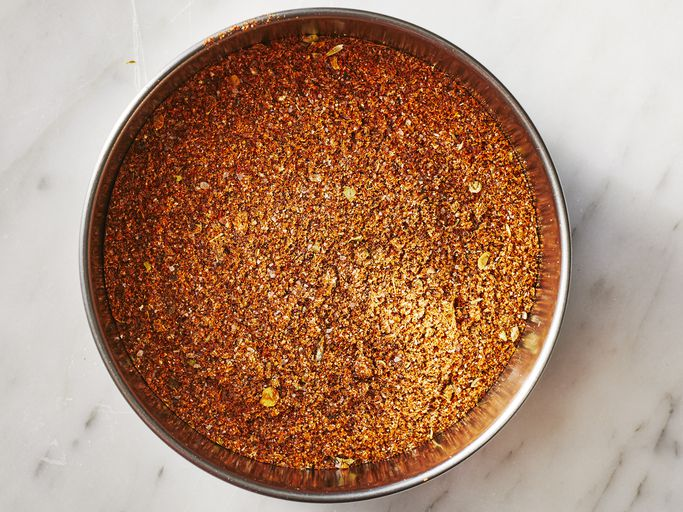

Homepage
Taco Seasoning

How do I make taco seasoning? Below, you'll find a basic recipe that you can try. It's a short process that shouldn't take more than 10-15 minutes of your time. The following is meant to be a starting point that you can later make adjustments to based on what you like and dislike. I hope you enjoy my take on this style of seasoning!
Ingredients
- 1 Tbsp Chili Powder
- 1/4 tsp Garlic Powder
- 1/4 tsp Onion Powder
- 1/4 tsp Crushed Red Pepper Flakes
- 1/2 tsp Dried Oregano
- 1/2 tsp Paprika
- 1/2 tsp Ground Cumin
- 1 tsp Black Pepper
Tools
- Measuring Spoons
- Bowl
- Mason Jar, or some other relatively airtight container
- Pestle and Mortar, optional
- Scale, optional
Tips Before Starting
- "Tbps" refers to tabelspoons whereas "tsp" refers to teaspoons.
- Although we're mostly dealing with powdered ingredients, you may find whole spices in your stores of choice. For example, I have whole cumin seeds and whole peppercorns. Since they're whole, they will take up more space than the equivalent ground spice would take in the same volume measure, therefore you will need to add a bit more to achieve an equal amount of ground spice.
- Although I have a peppercorn grinder, I tend to measure cumin seeds, whole peppercorns, and crushed red pepper flakes, then grind them together with my pestle and mortar. This breaks down the ingredients together for a slightly more consistent mix of spices in the end product.
- This recipe makes enough spice mix for use on 1 pound of ground meat or crumbled tofu.
Steps
- Measure all of the seasoning into a bowl.
- Mix the seasonings.
- You have a choice to either:
- Store away in a mason jar, or other storage container.
- Continue to Tips For After Your First Try to see how I like to use my batch of spice mix.
Tips For After Your First Try
- It'll be harder to figure out, but it's possible to measure everything with a scale that measures to the hundredth of a gram. You can place a very small bowl on the scale and note how much each volumetric measure weighs. This will results in very consistent spice mixes. It's a hassle, but possible if you want that amount of accuracy. This may be useful if making bigger portions of mix for personal use and/or gifting to others.
- If using for seasoning something like ground meat or tofu, you will need to add salt. Since I use Diamond Crystal Kosher Salt, I would add around 3/4-1 tsp of it for 1 lb of ground beef while browning on a pan. Once cooked, I add the spice mix to the beef in the pan along with around 1/2 Tbsp of flour (around 5g) and a 1/2 cup of water. Cook for a couple of minutes to wake up the spices and cook out the flour, which would otherwise give a gritty texture. Properly cooked flour will add a nice thickness and saucy feel to your meat mixture instead of a wet or oily quality. A substitute for flour would be something like a slurry made with corn starch and water.
- Salt is to your taste. Be aware that different salts are saltier per the same volume measure (280mg of sodium per 1/4 tsp for my brand of choice, whereas Morton Kosher Salt will be 480mg and Morton Iodized Table Salt will be 590mg).
- You can add salt directly to the spice mix instead. However, keep in mind that it may be easier to adjust saltiness of whatever you're making if you keep the salt separate.
- Once used, take note of the taste of your food and make adjustments. For example, I adjusted this recipe I found online by reducing the cumin from 1 1/2 tsp of ground cumin to 1/2 tsp to avoid stomach discomfort. Furthermore, I increased the amount of oregano from 1/4 tsp to 1/2 tsp because it's one of the flavors I really enjoy. You can remove stuff you don't particularly enjoy, add more of what you enjoy, or add new ingredients not listed to achieve something you like to eat.